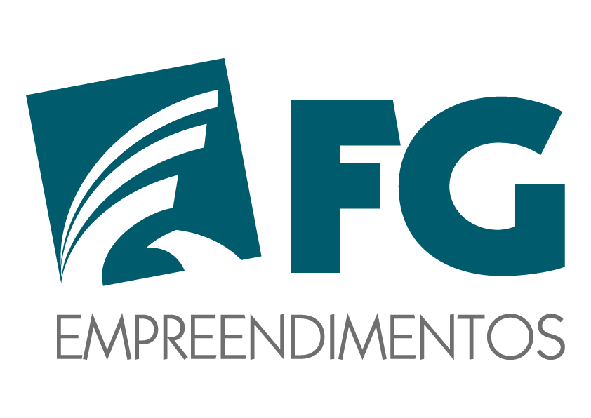

Qualidade · Sustentabilidade
Lance, acompanhe e feche o mês em um só lugar. Os painéis são atualizados a cada lançamento.
FG Empreendimentos
Use o mesmo usuário e senha do computador
© 2026 FG Empreendimentos. Todos os direitos reservados.
